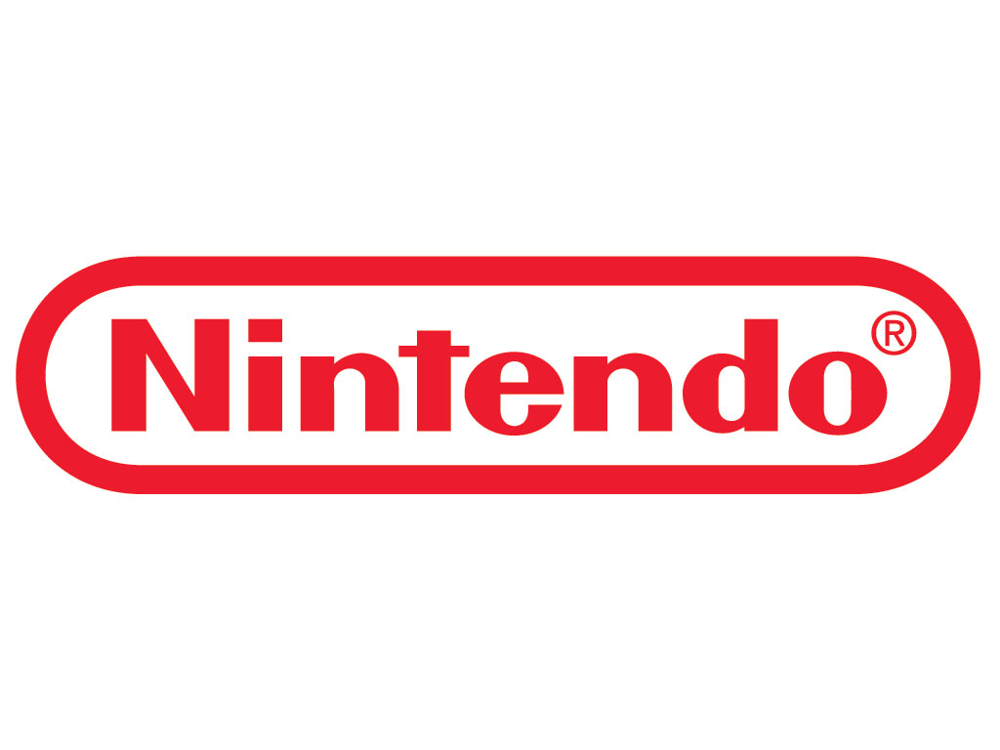

Nintendo
Enfoque en la jugabilidad: Nintendo prioriza crear experiencias de juego únicas y divertidas que sean accesibles para jugadores de todas las edades. Se enfocan en mecánicas de juego intuitivas y controles fáciles de dominar. Personajes icónicos y mundos mágicos: Sus personajes como Mario, Link y Pikachu son reconocidos mundialmente. Crean mundos fantásticos y llenos de encanto que invitan a la exploración y la aventura. Hardware innovador: A lo largo de su historia, Nintendo ha introducido consolas con características únicas, como los controles de movimiento de la Wii o los controles táctiles de la Nintendo DS. Iteración y refinamiento: Nintendo dedica mucho tiempo a perfeccionar sus juegos. A menudo, las ideas se desarrollan y refinan durante años antes de lanzarse al mercado. Valoración de la comunidad: Escuchan a sus fans y toman en cuenta sus opiniones para mejorar sus productos y crear experiencias más satisfactorias.
Sony
Gráficos de alta calidad: Sony busca ofrecer experiencias visuales impresionantes, con gráficos realistas y efectos especiales de vanguardia. Historias inmersivas: Sus juegos suelen contar con narrativas elaboradas y personajes complejos, creando mundos virtuales en los que los jugadores pueden sumergirse por completo. Juegos como servicio: Muchos de sus títulos cuentan con contenido adicional y actualizaciones constantes, lo que prolonga la vida útil de los juegos y fomenta la interacción entre los jugadores. Exclusivos de alta calidad: Sony invierte en estudios de desarrollo internos y externos para crear juegos exclusivos que solo se pueden disfrutar en sus consolas.

Microsoft
Potencia de cálculo: Las consolas de Microsoft suelen ser las más potentes del mercado, lo que permite ofrecer juegos con gráficos más detallados y mundos más grandes. Compatibilidad hacia atrás: Microsoft ha hecho un gran esfuerzo por permitir que los jugadores disfruten de sus juegos antiguos en las consolas más recientes. Xbox Game Pass: Este servicio de suscripción ofrece acceso a una amplia biblioteca de juegos, incluyendo títulos exclusivos y de terceros. Integración con Windows: Microsoft busca estrechar los lazos entre sus consolas y la plataforma Windows, permitiendo a los jugadores disfrutar de sus juegos en diferentes dispositivos.